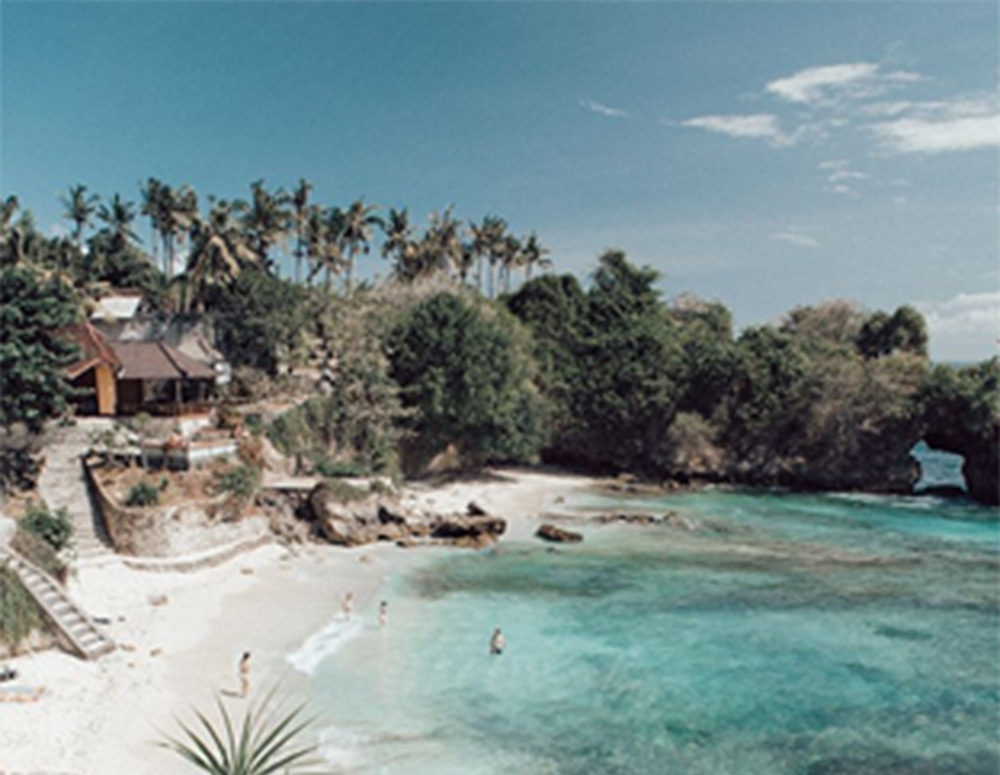

Bali adalah primadona pariwisata Indonesia yang sudah terkenal di seluruh dunia. Selain terkenal dengan keindahan alam, terutama pantainya, Bali juga terkenal dengan kesenian dan budayanya yang unik dan menarik. Industri pariwisata berpusat di Bali Selatan dan di beberapa daerah lainnya.
Pantai Kuta
Garis pantai yang sangat landai dan pasir putih yang membentang bertekstur halus, menjadi sajian panorama terbaik yang memanjakan mata. Aktivitas seperti berenang, selancar, atau hanya duduk santai untuk berjemur dapat dilakukan di Pantai Kuta.
Pantai Sanur
Sejarah pantai Sanur sebagai tempat liburan di pulau Bali mulai diperkenalkan pada tahun 1937 oleh seniman asal negara Belgia, yang bernama A.J. Le Mayeur. Seniman Belgia ini memiliki istri orang Bali yang bernama Ni Polok. Cara A.J. Le Mayeur mengenalkan keindahan Sanur beach ke mancanegara dengan membuat lukisan tentang pantai ini dan melakukan pameran lukisan ke mancanegara. Karena hal ini, pantai di Sanur Bali, mulai dikenal dunia internasional. Dapat dikatakan daerah sanur adalah salah satu perintis pariwisata pulau Bali, dan membuat pariwisata Bali terkenal sampai saat ini.
Ubud Monkey Forest
Dari sekian banyak pilihan objek wisata yang ada di Ubud, Ubud Monkey Forest selalu menjadi tempat wisata favorit wisatawan yang pertama kali liburan ke pulau Bali. Hal menarik yang wisatawan dapat lihat saat liburan ke Monkey Forest Ubud adalah Area hutan lindung dengan pepohonan yang sangat tinggi dan wisatawan dapat melihat kera ekor panjang.
Sawah Terasering Jatiluwih
Selain objek wisata pantai pasir putih, pariwisata Bali juga terkenal memiliki banyak objek wisata sawah terasering. Ada dua objek wisata sawah terasering yang terkenal di Bali. Yaitu, sawah terasering Jatiluwih, serta sawah terasering Tegalalang.
Patung Garuda Wisnu Kencana (GWK)
Taman Budaya Garuda Wisnu Kencana atau terkenal dengan nama GWK Bali, salah satu tempat wisata keluarga populer di pulau Bali. Hampir setiap hari objek wisata Taman Budaya Garuda Wisnu Kencana ramai dikunjungi wisatawan. Daya tarik utama yang membuat wisatawan tertarik liburan ke GWK Bali karena di GWK Bali terdapat patung tertinggi di Indonesia. Patung Garuda Wisnu Kencana memiliki tinggi 75 meter, dengan lebar patung 65 meter.
Tirta Empul Tampak Siring
Daya tarik objek wisata pura Tirta Empul karena lokasinya berdekatan dengan Istana Kepresidenan Tampaksiring. Selain itu, pengunjung akan melihat banyak kolam air di pura Tirta Empul dengan keunikan arsitektur pura. Hal paling menarik yang akan pengunjung lihat saat memasuki area dalam pura. Di dalam area pura akan terdapat sebuah kolam, dan di tengah kolam terdapat sumber mata air. Karena air dari kolam berasal dari mata air, maka air terlihat sangat jernih. Air dari kolam utama kemudian di alirkan ke kolam kedua tempat umat hindu melakukan ritual penyucian. Di lokasi kolam kedua, pengunjung akan melihat umat hindu Bali menyucikan diri menggunakan air pancuran dari kolam utama.
Desa Penglipuran
Daya tarik utama yang pengunjung lihat saat memasuki desa Pengelipuran, desain rumah penduduk terlihat sama dengan desain Bali asli. Desain Bali asli seperti gerbang masuk rumah, desain atap, serta tata letak rumah. Selain itu, pada area luar dan di dalam area rumah di tanami banyak pohon bunga dengan tatanan rapi. Daya tarik utama yang saya lihat paling menonjol dari desa Pengelipuran adalah kebersihan area desa.
Pulau Lembongan
Pulau Lembongan memiliki banyak pantai pasir putih terkenal seperti adalah Dream Beach dan Sunset Beach serta pantai pusat rumput laut bernama pantai Lebaoh

Air Terjun Gitgit
Air terjun Gitgit merupakan wisata air terjun di Bali yang ada di daerah Singaraja, Bali. Gitgit waterfall mempunyai ketinggian 35 meter dan dikelilingi hutan yang rimbun. Anda bisa
Taman Ujung
Taman Ujung merupakan taman yang sudah ada sejak zaman Belanda dan masih tetap terawat sampai sekarang. Di zaman Belanda taman ini juga dikenal sebagai taman air atau istana air.